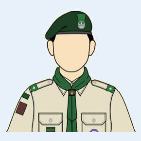
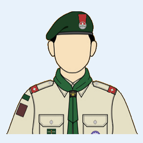
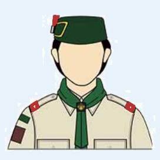

林卓然
童軍團長（綠膊）· 木章訓練員
一句話：週會、露營、比賽和服務，我都想成員試過一次。
虛擬領袖
綠膊
木章訓練員
總領袖獎章
貝登堡獎章
這頁全是虛擬領袖，不是本旅真實人物。正式領袖可照自己的情況，揀一種接近的寫法。
每頁都有一句話、肩章、路程、介紹和能力圖。能力 100 分貼着圓邊，超過 100 會突出圓外。
六項都寫到，而且能力圖六邊都突出圓外。適合經歷長、又想一次交代清楚的人。

童軍團長（綠膊）· 木章訓練員
一句話：週會、露營、比賽和服務，我都想成員試過一次。
我由幼童軍行到團長。週會會排技能，出營會排行程和安全，比賽前會陪小隊練，服務日會自己站在崗位上。
技能方面繩結、先鋒、地圖和急救都教過。服務做過渣馬、畢業禮和區會活動。照顧幼童軍和童軍的方式不一樣，所以兩種週會我都跟過。
籌活動時先寫目的、人數、集合時間和惡劣天氣怎麼辦，再才談遊戲。希望讀這頁的人知道：可以寫得很滿，但每一句都要是自己做過的事。
只把最拿手的一項寫高，其餘保持平常。適合想讓人知道「找我學什麼」的人。

童軍副團長（紅膊）
一句話：先鋒和繩結可以來問我。
我不是甚麼活動都帶。地圖和炊事只懂基本，先鋒和繩結就比較有把握，所以介紹只寫這兩項。
用短句和做過的崗位，少用形容詞。適合服務很多、不想寫成長篇的人。

樂行童軍副團長（紅膊）
一句話：有服務崗位可以找我排更。
我較少寫興趣。這頁只留服務做過什麼、現在負責什麼。技能和露營不是我的重點，所以能力圖沒有把它們拉高。
三兩句就夠。剛接職務、還沒有很多例子時，不必把六項都寫高。
幼童軍副團長（紅膊）
一句話：今年才開始帶幼童軍，請多多指教。
我以前是童軍團成員，今年開始協助幼童軍週會。現在主要跟着團長看集合、點名和遊戲。還沒有獨立帶過露營。
這是原本那一種：按支部順序寫經歷，語氣像跟成員說話。能力有高有低，不會六項一起拉滿。
童軍副團長（紅膊）· 樂行童軍成員
一句話：從隊員走到領袖，最想帶你們好好出營。
哈囉大家好，我是文浩！從隊員一路行到領袖，服完務仍會和樂行兄弟一齊出隊、一齊傾偈。
童軍時期最開心是練繩結、搭營和地域技能比賽。升上深資後較常走遠足；入樂行後則幫忙帶新人。現職童軍副團長，比賽前會陪小隊複習地圖、繩結和急救。
興趣是露營、攝影和深夜煲底傾計劃。希望新成員唔好驚開口問；舊成員記得帶細佬。
反面例子。六項都是 0，一句話只剩一個懶簽名。正式領袖不要交成這樣。
（職務也沒填）
一句話：這個人很懶，什麼也沒有寫
尚未寫上。
尚未寫上。